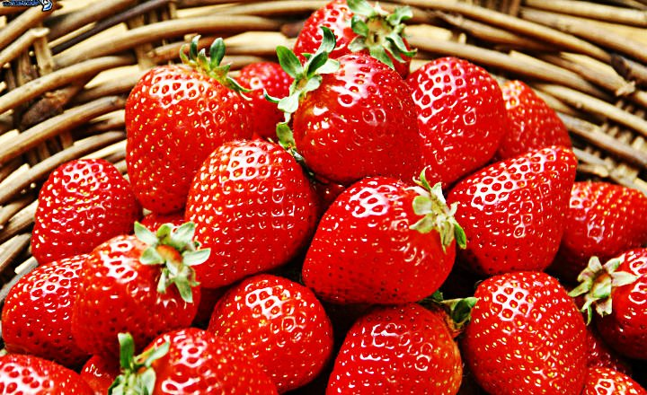
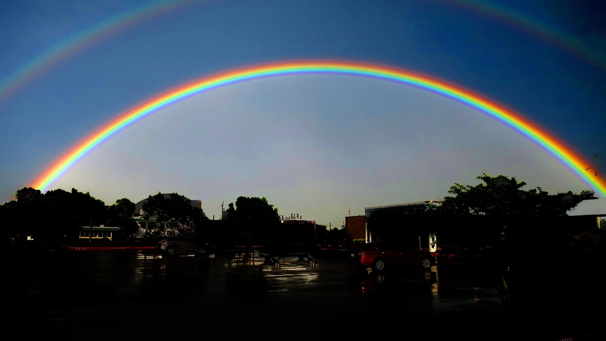

LAS FRESAS

La fresa es una fruta de forma cónica o casi redonda,de color rojo y con
un sabor que varía de ácido a muy dulce. Lo que más caracteriza a esta
fruta es su intenso aroma.
LAS ESTRELLAS

Una estrella es una esfera de gas caliete
que brilla intensamente cuya energía es
producida por un proceso interno de fusión
nuclear.
EL ARCOIRIS

Un arcoiris es una banda luminosa con forma de arco que presenta
los colores del espectro solar y aparece a veces en el cielo,
debido a la refracción y reflexión de la luz del sol en las gotas de
lluvia.